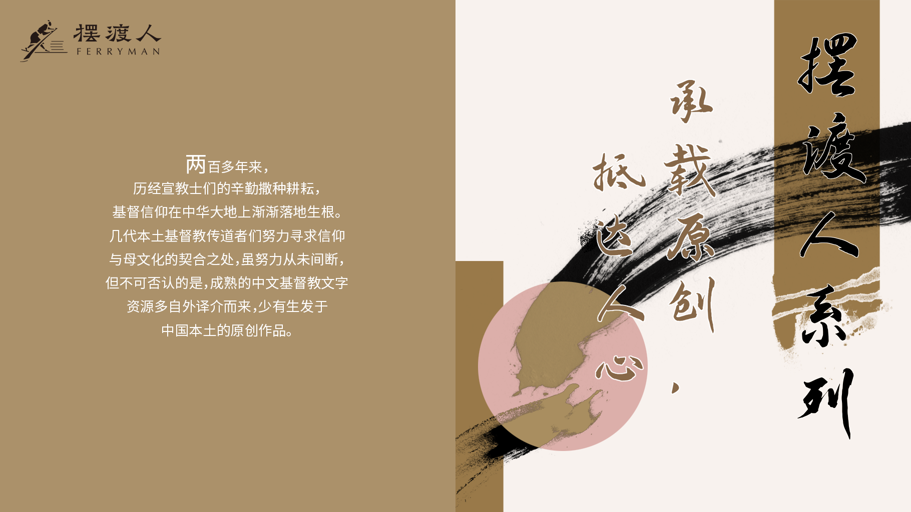

两百多年来，历经宣教士们的辛勤撒种耕耘，基督信仰在中华大地上渐渐落地生根。几代本土基督教传道者们努力寻求信仰与母文化的契合之处，虽努力从未间断，但不可否认的是，成熟的中文基督教文字资源多自外译介而来，少有生发于中国本土的原创作品。
进入21世纪以来，中国教会渐渐产生不少本土的、自觉的、原创的，基于教会和自我认信经验的优秀作品。基督信仰在数百年的积累沉淀当中，终于逐渐与这块土地上的语言文化融合，生发出更贴近本土情境的信仰反思、生命体验和历史见证。
这些原创文字犹如摆渡人，帮助中文读者从文化的此岸渡到信仰的彼岸，亲近生命之道，开启合乎信仰的看世界和自我的视角。
恩道有志于做生命意义上的摆渡人，愿投入众多优势资源，将中国基督徒原创作品引介给更多读者；也希望以此系列为契机，从精选成熟的原创作品开始，持续培育本土原创，助力每部作品在最广泛的海内外中文读者群当中传播。
我们相信，基督信仰在这片土地上真正落地生根的一个标志，就是在本土处境中，用本土语言表达信仰思考、描述生命感受的文字，在数量和质量上都达到较高的水平。
在当下基督教出版的本土处境下，恩道整合优势资源，祈望开辟出一条新路。当代中国基督徒原创作品，或可以一种活泼新鲜的方式，燃起中文信仰文字创作的星星之火。
虚位以待，期待您加入“摆渡人”的行列，扩张中国基督徒原创出版的境界！